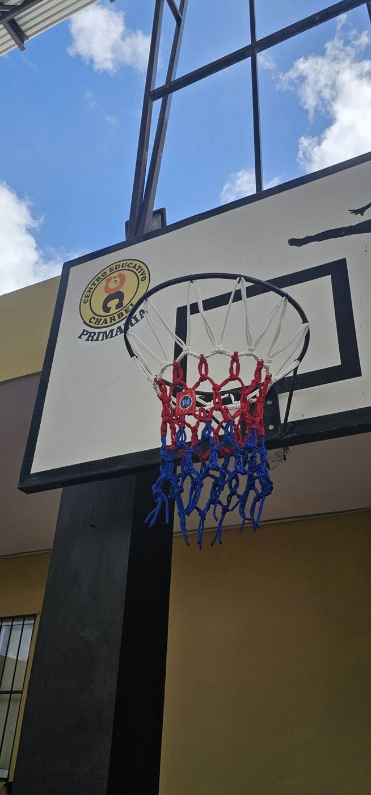
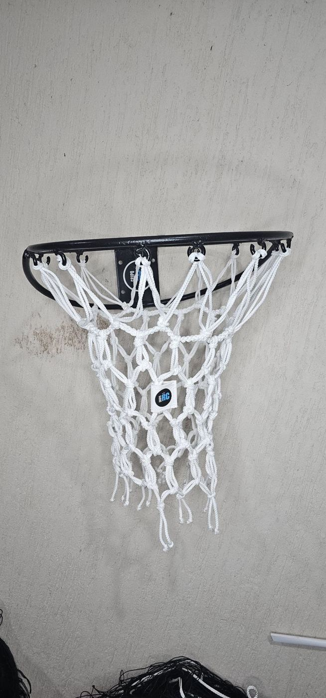

Una red de básquetbol parece un detalle, pero es lo primero que se ve gastado en una cancha. Si la tuya ya cuelga deshilachada o le faltan ganchos, aquí está lo que necesitas saber para elegir la red para canasta de básquetbol correcta y que te dure.
Medidas de la red y del aro de básquetbol
| Elemento | Medida reglamentaria (FIBA) |
|---|---|
| Altura del aro | 3.05 m del piso a la parte superior del aro |
| Diámetro interior del aro | 45 cm |
| Largo de la red | De 40 a 45 cm |
| Puntos de sujeción | 12 alrededor del aro |
Casi todos los aros escolares y de parque son de 45 cm y 12 ganchos, pero no todos. Antes de pedir, cuenta los ganchos de tu aro.
Nuestra red: poliéster trenzado y tejido a mano

Nuestras redes de básquetbol son de cordón de poliéster trenzado de 60 filamentos (4 mm), tejidas a mano en forma hexagonal y de 45 cm de largo, para aros de 12 ganchos.
Las hacemos en blanco, que es la clásica, o en los colores de tu escuela o equipo. Una red en los colores del colegio cambia la imagen de la cancha con muy poca inversión.
Si también necesitas el aro, armamos la canasta completa: aro de acero sólido redondo de 1/2" (12.7 mm), 45 cm de diámetro y 12 ganchos, con su red.
Cuándo cambiar la red
- Tiene cordones rotos o deshilachados.
- Le faltan lazos y ya no está sujeta en los 12 ganchos.
- Cuelga dispareja o torcida.
- El balón ya no se frena al pasar: la red debe detenerlo un instante para que se vea la canasta.
Una red en mal estado también da mala impresión de toda la instalación: es lo primero que ven los papás en una escuela o los socios en un club.
Cómo colocarla
- Revisa que el aro tenga los 12 ganchos completos y sin filos.
- Pasa cada lazo de la parte de arriba de la red por un gancho, sin saltarte ninguno.
- Revisa que la red cuelgue pareja alrededor del aro.
Si tu aro tiene otro número de ganchos o es de otro tipo, mándanos una foto y te decimos si nuestra red le queda.
Qué mandarnos para cotizar
- Cuántas redes necesitas (una por aro).
- Si quieres solo la red o la canasta completa.
- Los colores.
- La ciudad de entrega.
Si en tu cancha también se juega voleibol, revisa las medidas de la cancha y la red de voleibol.
Fuente de las medidas reglamentarias: Reglas Oficiales de Baloncesto y reglamento de equipamiento de la FIBA.
Preguntas frecuentes
¿Cuánto mide una red de básquetbol?
La red reglamentaria mide de 40 a 45 cm de largo y se sujeta al aro en 12 puntos. Nuestra red mide 45 cm de largo y es para aros de 12 ganchos.
¿A qué altura va el aro de básquetbol?
A 3.05 m del piso hasta la parte de arriba del aro, según las reglas de la FIBA. El aro mide 45 cm de diámetro interior.
¿De qué material es la red de básquetbol de Grupo RC?
De cordón de poliéster trenzado de 60 filamentos (4 mm), tejida a mano en hexágono. La hacemos en blanco o en los colores de tu escuela o equipo.
¿Venden la canasta completa?
Sí. La canasta completa lleva aro de acero sólido de 1/2" con 45 cm de diámetro y 12 ganchos, más su red. También puedes pedir solo la red.